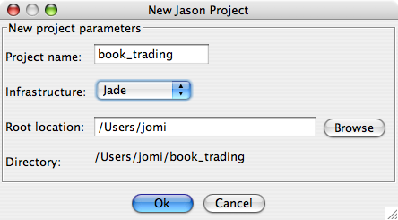
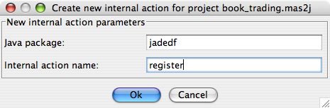
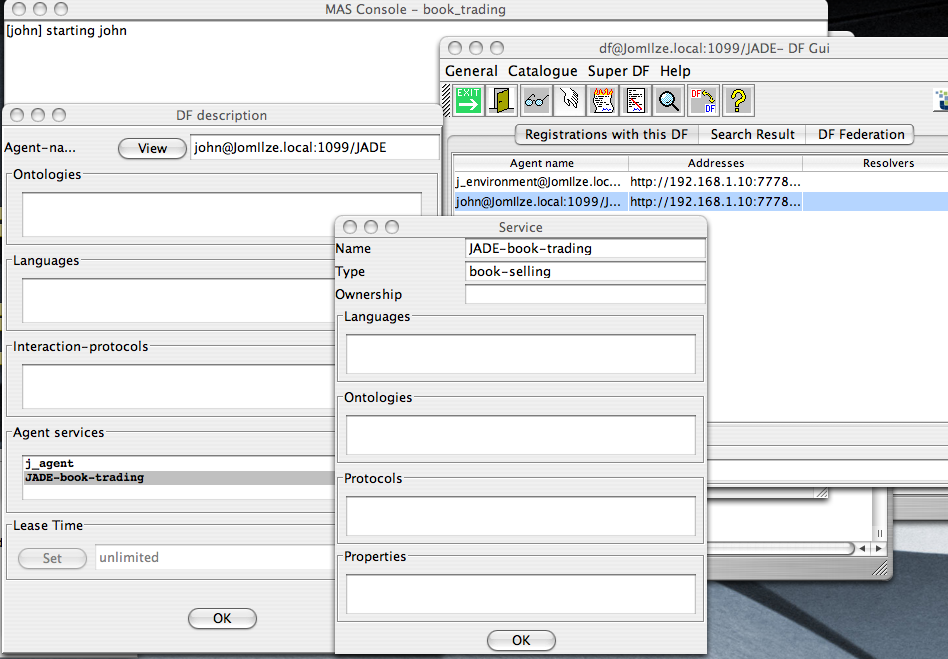

This document aims to show how to create Jason agents that participate in a multi-agent system (MAS) formed by ``normal'' JADE agents (by normal we mean being not developed considering interoperability with Jason, i.e., any existing JADE agent). We will develop a Jason book-seller agent that joints the system of the traditional example of book trading that comes with JADE. The JADE code will remain as in the example, it will not be changed to interoperate with Jason.
The first thing a seller agent should do is to register itself as a book seller in the JADE DF (Directory Facilitator) service. The standard AgentSpeak language does not have a command for this purpose, of course; however, in Jason, we can create a new internal action in Java that can do the job.
The following steps create a new Jason project for our seller agent and an internal action that register it in JADE's DF:

// Agent john in project book_trading.mas2j
/* Initial beliefs and rules */
// A 'book' belief has three arguments:
// . the title
// . its price
// . the quantity in stock
book("Harry", 32, 20).
book("Jason", 50, 10).
/* Initial goals */
!registerDF.
/* Plans */
+!registerDF <- jadedf.register("book-selling","JADE-book-trading").
The jadedf.register("book-selling","JADE-book-trading") code calls the internal action named register in a package called jadedf.

The source code of this internal action is as follows (the execute method has the code for the internal action and args contains the arguments given in the AgentSpeak code):
package jadedf;
import jade.domain.*;
import jade.domain.FIPAAgentManagement.*;
import jason.asSemantics.*;
import jason.asSyntax.*;
import jason.infra.jade.JadeAgArch;
import java.util.logging.Logger;
/**
* Register a service in the jade DF (available only when the JADE infrastructure is used)
*
* This internal action does not replace the services of the agent but
rather adds a new service.
*
* The first argument is the service type and
* the second is the name (they should be of type String).
*
* @author Jomi
*/
public class register extends DefaultInternalAction {
private Logger logger = Logger.getLogger("JadeDF.mas2j."+register.class.getName());
@Override
public Object execute(TransitionSystem ts, Unifier un, Term[] args) throws Exception {
try {
if (ts.getUserAgArch().getArchInfraTier() instanceof JadeAgArch) {
// get a reference to the JADE agent that represents this Jason agent
JadeAgArch infra = (JadeAgArch)ts.getUserAgArch().getArchInfraTier();
// 0. get arguments from the AgentSpeak code (type and name of the new service)
StringTerm type = (StringTerm)args[0];
StringTerm name = (StringTerm)args[1];
// 1. get current services
DFAgentDescription dfd = new DFAgentDescription();
dfd.setName(infra.getAID());
DFAgentDescription list[] = DFService.search( infra, dfd );
// 2. deregister
if ( list.length > 0 ) {
DFService.deregister(infra);
dfd = list[0]; // the first result
}
// 3. add a new services
ServiceDescription sd = new ServiceDescription();
sd.setType(type.getString());
sd.setName(name.getString());
dfd.addServices(sd);
// 4. register again
DFService.register(infra, dfd);
return true;
} else {
logger.warning("jadefd.register can be used only with JADE infrastructure.");
}
} catch (Exception e) {
logger.warning("Error in internal action 'jadedf.register'! "+e);
}
return false;
}
}

The buyer agent, written in JADE, retrieves information about all sellers from the DF, and then sends a CFP (call for proposal) message to all those agents. Since Jason agents use KQML-like performatives, the performatives used by JADE agents are not available in Jason, i.e., the semantics of those performatives are not implemented in Jason (which implements the semantics of performatives such as tell, askOne, achieve, etc.). We need therefore to write ``low level'' plans to handle in AgentSpeak the CFP messages from JADE agents.
Every message that arrives in to Jason agent (and is accepted for processing) produces an event like +!kqml_received(Sender, Performative, Content, MsgId) (the MsgId should be used to reply to the message). We can then create plans to handle this event in the particular case where the performative is CFP or ACCEPT_PROPOSAL:
// Agent john in project book_trading.mas2j
/* Initial beliefs and rules */
// The book beliefs has three arguments:
// . the book name
// . the price
// . the quantity in stock
book("Harry", 32, 20).
book("Jason", 75, 10).
/* Initial goals */
!registerDF.
/* Plans */
+!registerDF <- jadedf.register("book-selling","JADE-book-trading").
/* handle CFP performatives */
// CFP
+!kqml_received(Sender, cfp, Content, MsgId)
: book(Content, Price, Qtd) & Qtd > 0 // if I have the book,
<- .send(Sender, propose, Price, MsgId). // propose;
+!kqml_received(Sender, cfp, Content, MsgId)
<- .send(Sender, refuse, "not-available", MsgId). // otherwise, refuse.
// ACCEPT-PROPOSAL
+!kqml_received(Sender, accept_proposal, Content, MsgId)
: book(Content, Price, Qtd) & Qtd > 0 // If I still have the book
<- -+book(Content, Price, Qtd-1); // change stock
.print("New stock for ", Content, " is ", Qtd-1);
.send(Sender, tell, Content, MsgId). // confirm
+!kqml_received(Sender, accept_proposal, Content, MsgId)
<- .send(Sender, failure, "not-available", MsgId).
Follow the steps below to run the system with JADE and Jason agents:
java jade.Boot -container -host localhost "bob:examples.bookTrading.BookBuyerAgent(Harry)"
It will try to buy a book entitled ``Harry''.
The output from the buyer is:
Hallo! Buyer-agent bob@JomIlze.local:1099/JADE is ready. Target book is Harry Trying to buy Harry Found the following seller agents: john@JomIlze.local:1099/JADE Harry successfully purchased from agent john@JomIlze.local:1099/JADE Price = 32 Buyer-agent bob@JomIlze.local:1099/JADE terminating.
You can also run the whole system without jEdit:
java jade.Boot -gui "bob:examples.bookTrading.BookBuyerAgent(Harry)"
cd <directory where the book_trading example was saved> export CLASSPATH=$CLASSPATH:bin/classes java jade.Boot -container -host localhost "john:jason.infra.jade.JadeAgArch(john.asl)"
The overall process of launching distributed agents can be simplified by the Ant script created by Jason as explained in the FAQ.